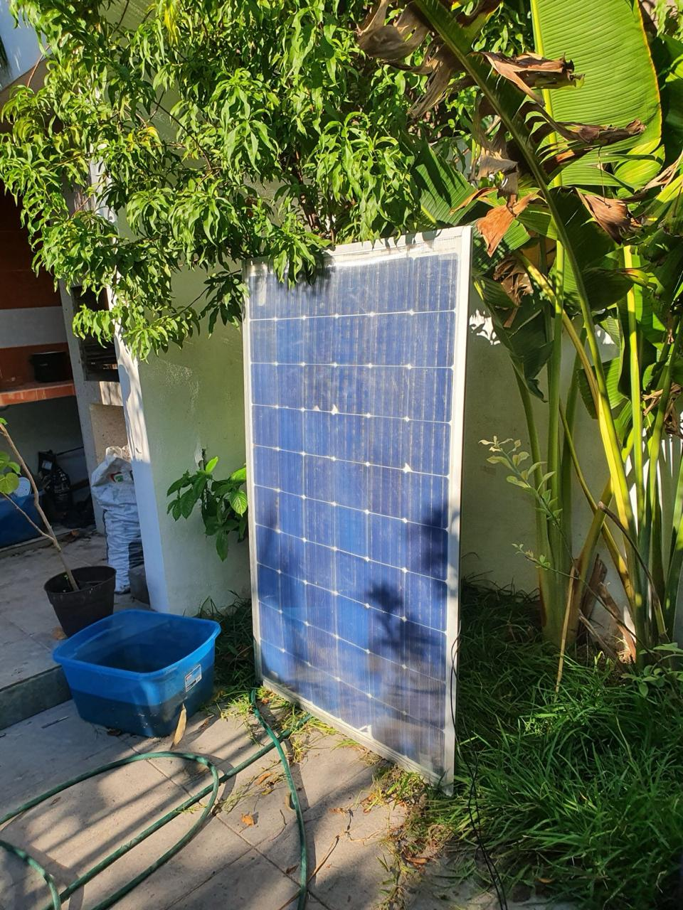
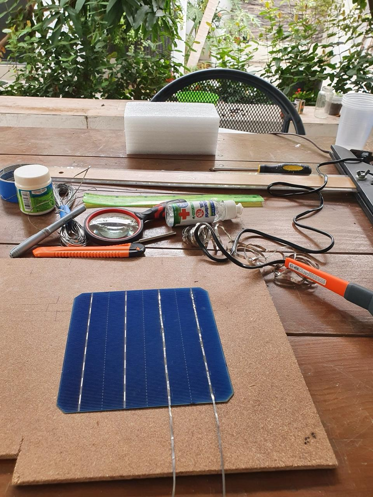

Personal project · 2020
Photovoltaic panel — Hardware integration
Hands-on prototyping and functional electrical verification.
Engineering problem
I set out to construct a functional photovoltaic panel from individual cells with a calculated design target of approximately 75 W.
My contribution
I soldered approximately 60 cells in series, built an aluminum frame with polycarbonate protection and connected the panel to an existing residential inverter system.
Testing & verification
I checked continuity and electrical output using a multimeter under direct sunlight around midday.
Results & limitations
The panel was functional and integrated into a residential system with a bidirectional meter. Actual 75 W output was not established by a controlled measurement; no efficiency or endurance claim is made.
Tools & methods
Project gallery

